Lecture 13 Workbook
This workbook holds the notes and the questions for Lecture 13. Each section starts with notes that explain everything on the slides, and a little more. Answer the questions as we discuss the slides. Sections 2 and 9 continue the theatre seats problem in two parts, to do at home as practice. Section 11 has two complete programs to read, run and extend after class. By the end, you should be able to:
- create an array of objects and check a slot before using its reference;
- copy an array and explain which objects a reference copy still shares;
- store a grid as an array of rows and read a cell with two indexes;
- use nested loops for row totals, column totals and ragged rows;
- choose between an array and an
ArrayList, and use theArraysclass for common array operations; and - write complete programs that use object arrays and grids.
1. Object arrays
Four students
Ada, Bo, Chen and Dev study together. Each has a week of study minutes. We want one collection that a loop can visit, so we can print the names and compare the weeks. Each Student holds a name. A StudyGroup keeps the students together and stores a row of minutes for each one.
An object array holds references to objects. Its base type can be a class we write, such as Student. This class has a getter to read the name and a setter to change it:
public class Student
{
private String name;
public Student(String name)
{
this.name = name;
}
public String getName()
{
return name;
}
public void setName(String name)
{
this.name = name;
}
}Null slots
Student[] members = new Student[4]; creates one array with four reference slots. It creates no students. Every slot starts at null. A null slot has no object to call a method on. Reading that slot is allowed, but calling getName() through it throws NullPointerException.
Create a student for each position before using every element:
Student[] members = new Student[4];
members[0] = new Student("Ada");
members[1] = new Student("Bo");
members[2] = new Student("Chen");
members[3] = new Student("Dev");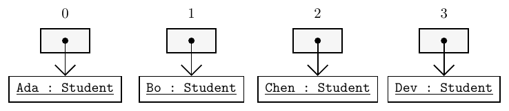
The array and the four students are separate objects. Each arrow starts in a slot and ends at the student that slot refers to. Several slots can also refer to the same student; changing that student's name is then visible through each of those slots.
Traversal
A for-each loop copies each reference into its loop variable. The loop can call the getter directly when all slots are filled. If null means an empty place, check it before calling the getter:
for(Student member : members) {
if(member != null) {
System.out.println(member.getName());
}
}For the four filled slots, this prints Ada, Bo, Chen and Dev on separate lines. The test also lets the same loop work when some slots are null. An indexed for loop is needed when a position must be used again, for example to find a student's row of minutes. When all references are known, an array literal creates and fills the array in one step:
Student[] members = {new Student("Ada"), new Student("Bo"),
new Student("Chen"), new Student("Dev")};Practice
1.1 What is printed before this program stops, and why does it stop?
Student[] group = new Student[3];
group[0] = new Student("Ada");
System.out.println(group[0].getName());
System.out.println(group[1] == null);
System.out.println(group[2].getName());| Line | Printed |
|---|---|
| 1 | |
| 2 |
1.2 Write a loop to print every non-null student's name from this array. Do not print a line for a null slot.
Student[] group = {new Student("Ada"), null, new Student("Bo")};The box includes Student. Complete the loop in main.
1.3 What does this print? Explain which object is changed.
Student ada = new Student("Ada");
Student[] pair = {ada, ada};
pair[1].setName("Ada Lee");
System.out.println(pair[0].getName());| Line | Printed |
|---|---|
| 1 |
1.4 Write one declaration with an array literal that creates students named Rae and Ivo, in that order. Call the array pair.
| Declaration |
|---|
2. Seats Part 1: A theatre
The problem
This part is practice for after class. A SeatRow already represents one row of seats. Write Theatre to hold an array of rows, and TheatreDemo to try it. Row and seat indexes start at 0. Both constructor sizes must be non-negative; zero rows or zero seats are allowed.
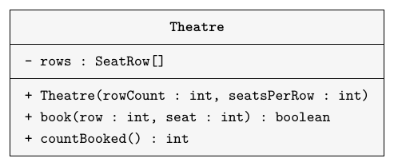
The minus sign marks the private field. The plus signs mark public members. The constructor first creates the array, then a separate SeatRow for every slot. Creating only new SeatRow[rowCount] leaves null slots.
Use the existing row methods:
| Method | Meaning |
|---|---|
getSize() | Returns the number of seats. |
isBooked(seat) | Reads a valid seat; true means booked. |
book(seat) | Returns false for an invalid or already booked seat; otherwise books it. |
countFree() | Returns the number of free seats. |
firstFree() | Returns the lowest free seat index, or -1 if full. |
Theatre.book checks the row before using rows[row], then lets SeatRow.book check the seat. It returns false for either invalid index or an already booked seat. Otherwise it books the seat and returns true. countBooked adds each row's size minus its free count. It needs no second counter stored as a field.
The demo creates new Theatre(3, 5), prints its booked count, then books (0, 1), repeats (0, 1), tries (3, 0), books (1, 4), and tries (2, 5). Print each booking result and the final booked count, using the labels below.
Practice
2.1 Write Theatre and TheatreDemo to meet this description. Use the existing SeatRow. Use additional paper or an IDE for the complete implementation.
Expected output
Booked: 0 Book (0, 1): true Book (0, 1) again: false Book (3, 0): false Book (1, 4): true Book (2, 5): false Booked: 2
A finished SeatRow is available in both boxes. The first checking program tries zero rows, zero seats, separate row objects, invalid indexes and repeated bookings.
A finished Theatre is available for the demo box.
2.2 Predict the four output lines for this smaller theatre.
Theatre theatre = new Theatre(2, 3);
System.out.println(theatre.book(1, 2));
System.out.println(theatre.book(1, 2));
System.out.println(theatre.book(2, 0));
System.out.println(theatre.countBooked());| Line | Printed |
|---|---|
| 1 | |
| 2 | |
| 3 | |
| 4 |
3. Copying
A separate array
Assigning an array variable copies its reference. With copy = original, both names refer to one array. To keep independent int values, create a second array and copy the elements across:
int[] original = {45, 0, 90};
int[] copy = new int[original.length];
for(int i = 0; i < original.length; i++) {
copy[i] = original[i];
}
copy[0] = 99;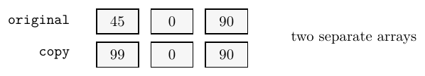
The loop copies the three values. Changing copy[0] leaves original[0] at 45.
Copying with Arrays
The library class Arrays has static methods for arrays. Put import java.util.Arrays; before the class declaration. Inside a method, Arrays.copyOf creates a new array of the requested length:
int[] original = {45, 0, 90};
int[] longer = Arrays.copyOf(original, 5);
int[] shorter = Arrays.copyOf(original, 2);longer contains [45, 0, 90, 0, 0]; the extra int slots get 0. shorter contains [45, 0]; the last value does not fit. The original array remains length 3. Assigning the returned reference back to the original variable makes that variable refer to a different array; it does not change the old array's length.
Identity and contents
For arrays, == tests whether two references refer to the same array. Arrays.equals compares the elements of two one-dimensional arrays in order. Separate arrays can have equal contents:
int[] a = {45, 0, 90};
int[] b = Arrays.copyOf(a, a.length);
System.out.println(a == b); // false
System.out.println(Arrays.equals(a, b)); // trueFor object arrays, Arrays.equals uses the elements' equals methods and handles null slots. Two arrays of different lengths cannot have equal contents, even if their first elements match.
Copying references
A shallow copy creates a new array and copies its references. It creates no new students. Extra slots in a longer reference array start null:
Student[] members = {new Student("Ada")};
Student[] copy = Arrays.copyOf(members, 3);
copy[0].setName("Ada Lee");
System.out.println(members[0].getName()); // Ada Lee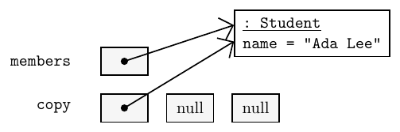
Both first slots can reach the same student, so a setter call through either array changes the name seen through both. Replacing copy[0] with a new student changes that slot only. members[0] still refers to Ada Lee.
Practice
3.1 What does this print? Explain why the two values differ.
int[] original = {8, 4, 6};
int[] copy = new int[original.length];
for(int i = 0; i < original.length; i++) {
copy[i] = original[i];
}
copy[1] = 9;
System.out.println(original[1] + " " + copy[1]);| Line | Printed |
|---|---|
| 1 |
3.2 Predict all three output lines. Describe which student each first slot refers to at the end.
Student[] members = {new Student("Rae")};
Student[] more = Arrays.copyOf(members, 3);
more[0].setName("Rae Tan");
more[0] = new Student("Ivo");
System.out.println(members[0].getName());
System.out.println(more[0].getName());
System.out.println(more[2]);| Line | Printed |
|---|---|
| 1 | |
| 2 | |
| 3 |
3.3 An array members contains one student. Write one line that makes a new array five with the same first reference and room for four more. What do the new slots contain?
| Declaration | New slots contain |
|---|---|
4. Grids
A row per student
A grid has rows and columns. Our group has four students and seven days, so each row is one student's week and each column is one day for the whole group. Day indexes run from 0 to 6.
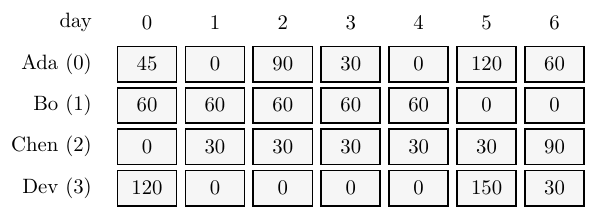
Ada's row is the week used for one student's study log. We now need the type int[][], pronounced "array of arrays of int".
Creation and cells
new int[4][7] creates an outer array of four rows and a separate int[7] for each row. Every int starts at 0. The first index chooses a row, and the second chooses a cell inside that row:
int[][] minutes = new int[4][7];
minutes[0][5] = 120;
int[] week = minutes[0];
System.out.println(week[5]); // 120week refers to the existing row; it does not copy it. A two-dimensional array is an array whose elements are row references:
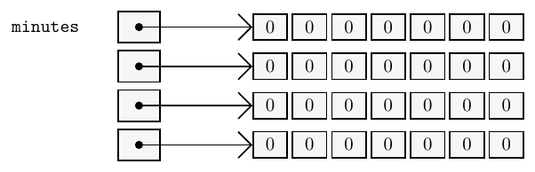
With new int[4][], only the outer array is created. Its row slots start null. Each row needs an array before a cell can be read or changed. For example, minutes[0] = new int[7]; can create one missing row.
Parallel arrays
Parallel arrays use the same index for related data. In StudyGroup, members[row] is the student whose week is minutes[row]. The constructor creates both arrays in the same order. The getters require valid indexes: row 0 to 3 and day 0 to 6.
public class StudyGroup
{
private Student[] members;
private int[][] minutes;
public StudyGroup()
{
members = new Student[] {new Student("Ada"), new Student("Bo"),
new Student("Chen"), new Student("Dev")};
minutes = new int[][] {
{45, 0, 90, 30, 0, 120, 60},
{60, 60, 60, 60, 60, 0, 0},
{0, 30, 30, 30, 30, 30, 90},
{120, 0, 0, 0, 0, 150, 30}
};
}
public Student getMember(int row)
{
return members[row];
}
public int getMinutes(int row, int day)
{
return minutes[row][day];
}
}getMember returns a student reference; getMinutes returns one int. Keep the row index the same when using them together. Calling group.getMember(0).getName() reads Ada's name; calling group.getMinutes(0, 5) reads her 120 minutes for day 5.
Practice
4.1 The last line throws NullPointerException. Add one line before it so row 1 has four cells and the assignment can run.
int[][] grid = new int[3][];
grid[1][2] = 9;Complete the row creation in the box. The checking lines print its length and the stored value.
4.2 Predict both output lines.
int[][] grid = {{2, 5, 8}, {3, 6, 9}};
grid[1][0] = grid[0][2];
System.out.println(grid[1][0]);
System.out.println(grid.length + " " + grid[1].length);| Line | Printed |
|---|---|
| 1 | |
| 2 |
4.3 Given StudyGroup group = new StudyGroup();, write one print statement that displays Chen's name and minutes for day 6 as Chen: 90. Use the two getters.
The finished Student and StudyGroup classes are available.
5. Nested loops
Row totals
A row total keeps the row fixed and visits every column. This method belongs inside StudyGroup, after the getters:
// Part of StudyGroup.
public int totalForStudent(int row)
{
int sum = 0;
for(int day = 0; day < minutes[row].length; day++) {
sum += minutes[row][day];
}
return sum;
}The method returns 345, 300, 240 and 300 for rows 0 to 3. Each call starts its own sum at 0. Ada's running sums show what happens as the day index moves:
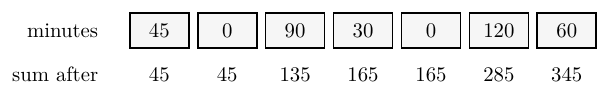
The demo can loop over students and call this method for every row. The sum for Bo starts at 0 again, so it does not include Ada's minutes.
Column totals
A column total keeps the column fixed and visits every row. The day argument stays fixed while the row index changes:
// Part of StudyGroup.
public int totalForDay(int day)
{
int sum = 0;
for(int row = 0; row < minutes.length; row++) {
sum += minutes[row][day];
}
return sum;
}For day 5, the method adds 120, 0, 30 and 150, giving 300. The seven day totals are 225, 90, 180, 120, 90, 300 and 180. All four rows in this group have seven cells, so every valid day index exists in every row.
Rows and columns
A nested loop is a loop inside another loop. The outer loop chooses a row, then the inner loop visits that row's cells. The inner loop starts again at column 0 for every row:
for(int row = 0; row < grid.length; row++) {
for(int col = 0; col < grid[row].length; col++) {
System.out.println(grid[row][col]);
}
}grid.length counts the rows. grid[row].length counts the cells in the current row. The inner loop must use that row's length, rather than the number of rows. In a four-by-seven grid, its body runs 28 times.
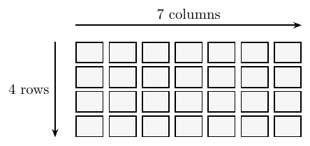
The busiest student
The best-so-far pattern can compare row totals. This method returns a row index; the demo uses that index with getMember:
// Part of StudyGroup.
public int busiestStudent()
{
int best = 0;
for(int row = 1; row < minutes.length; row++) {
if(totalForStudent(row) > totalForStudent(best)) {
best = row;
}
}
return best;
}Ada has the largest total, 345, so the result is 0. Bo and Dev tie at 300. The strict > test keeps the earlier row if the largest totals tie. Row 0 is a valid starting choice because this group always has four rows.
Bounds
Both indexes must be valid. In a four-by-seven grid, grid[4][0] has no row 4, and grid[0][7] has no column 7. Each expression compiles, but throws ArrayIndexOutOfBoundsException when evaluated. If the first exception stops the program, later expressions are not reached. A null row causes NullPointerException when its length or a cell is accessed; it is a different problem from an invalid index.
Practice
5.1 Fill in the running sum after each cell. The sum starts once, before both loops, so it continues from one row into the next.
int[][] values = {{2, 4}, {1, 3}};
int sum = 0;
for(int row = 0; row < values.length; row++) {
for(int col = 0; col < values[row].length; col++) {
sum += values[row][col];
}
}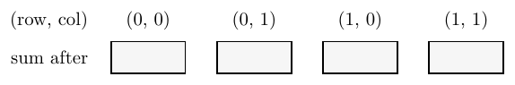
| Cell | Sum after |
|---|---|
| (0, 0) | |
| (0, 1) | |
| (1, 0) | |
| (1, 1) |
5.2 Add a StudyGroup method int studentsOver(int day, int limit). It returns how many students recorded more than limit minutes on that day. Assume the day index is valid.
Add the method to the class. The checking program tries a limit equal to a value, a limit above every value, a negative limit and a second call.
5.3 This loop prints only four cells. Rewrite the inner loop's condition so it visits every cell.
int[][] marks = {{1, 2, 3}, {4, 5, 6}};
for(int row = 0; row < marks.length; row++) {
for(int col = 0; col < marks.length; col++) {
System.out.println(marks[row][col]);
}
}| Inner condition |
|---|
5.4 What row index is printed? What index would be printed if > became >=?
int[] totals = {200, 200, 150};
int best = 0;
for(int row = 1; row < totals.length; row++) {
if(totals[row] > totals[best]) {
best = row;
}
}
System.out.println(best);| With > | With >= |
|---|---|
6. Ragged rows
Different row lengths
A ragged array has rows of different lengths. For example, a row might hold study sessions rather than one value for every day. The row index still identifies a student, but a column no longer means one shared day.
int[][] sessions = {
{45, 90},
{},
{30, 60, 120}
};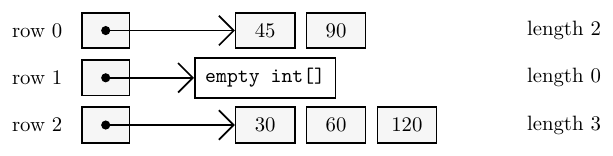
The outer braces create the array of rows. Each inner pair creates a row, including the empty array of length 0. An empty row exists and has a length; a null row has no array and cannot supply a length or a cell.
Traversal
Use sessions[row].length in the inner loop. That loop runs zero times for the empty row, then starts at column 0 again for the next row. For the literal above, the values visited are 45, 90, 30, 60 and 120. A bound such as sessions[0].length describes only row 0. Applying it to every row can miss cells in long rows or exceed the bounds of short rows.
Practice
6.1 Write the output in order. Explain what the empty row contributes.
int[][] sessions = {{10}, {}, {20, 30, 40}};
for(int row = 0; row < sessions.length; row++) {
for(int col = 0; col < sessions[row].length; col++) {
System.out.println(sessions[row][col]);
}
}| Line | Printed |
|---|---|
| 1 | |
| 2 | |
| 3 | |
| 4 |
6.2 Create int[][] rows with three non-null row arrays of lengths 2, 0 and 5. Every cell must start at 0.
Create the rows before the checking loop. It prints every row length and every cell.
7. Arrays class
Printing arrays
Import java.util.Arrays and call its methods through the class name. Printing an array directly does not list its contents. Arrays.toString formats a one-dimensional array, while Arrays.deepToString also visits nested rows:
import java.util.Arrays;
public class ArrayPrintingDemo
{
public static void main(String[] args)
{
int[] week = {45, 0, 90};
int[][] sessions = {{45, 90}, {}, {30, 60, 120}};
System.out.println(Arrays.toString(week));
System.out.println(Arrays.deepToString(sessions));
}
}[45, 0, 90] [[45, 90], [], [30, 60, 120]]
These methods return strings; the two println calls print them. Use a loop instead when a report needs labels or a student's name beside each value.
Sorting and filling
For an int[], Arrays.sort puts the supplied values in increasing order. Arrays.fill changes every element to the supplied value:
int[] values = {90, 45, 0};
Arrays.sort(values);
System.out.println(Arrays.toString(values)); // [0, 45, 90]
Arrays.fill(values, 30);
System.out.println(Arrays.toString(values)); // [30, 30, 30]Do not sort a week's minutes to find the largest value: the order tells us which day each value belongs to. Search without changing the order, or sort a copy. For a reference array, fill stores the same supplied reference in every slot. It does not make a new object for every slot.
Comparison
Arrays.equals compares one-dimensional contents. When the elements are row arrays, separately created rows need not be the same objects even when their values match. Use Arrays.deepEquals to compare the values inside those rows. The printing and comparison methods leave their arrays unchanged.
| Method | Effect |
|---|---|
copyOf(a, n) | Returns a new array of length n, copying what fits. |
equals(a, b) | Compares one-dimensional elements in order. |
deepEquals(a, b) | Also compares contents inside nested rows. |
toString(a) | Returns a string showing one-dimensional contents. |
deepToString(a) | Also includes contents inside nested rows. |
sort(a) | Changes the supplied array's order. |
fill(a, value) | Changes every element in the supplied array. |
Call these methods through Arrays. copyOf returns a new array. Sorting and filling change the array you supply.
Practice
7.1 Predict all three output lines. Which array is changed by sorting and filling?
int[] a = {9, 3, 6};
int[] b = Arrays.copyOf(a, a.length);
Arrays.sort(b);
System.out.println(Arrays.toString(a));
System.out.println(Arrays.toString(b));
Arrays.fill(b, 0);
System.out.println(Arrays.toString(b));| Line | Printed |
|---|---|
| 1 | |
| 2 | |
| 3 |
7.2 Predict the three boolean results. Explain why the first two differ.
int[][] x = {{1, 2}, {3}};
int[][] y = {{1, 2}, {3}};
System.out.println(Arrays.equals(x, y));
System.out.println(Arrays.deepEquals(x, y));
y[1][0] = 4;
System.out.println(Arrays.deepEquals(x, y));| Line | Printed |
|---|---|
| 1 | |
| 2 | |
| 3 |
7.3 What does this print, and how many Student objects are created by this code?
Student[] guests = new Student[2];
Arrays.fill(guests, new Student("Guest"));
guests[0].setName("Rae");
System.out.println(guests[1].getName());| Line | Printed |
|---|---|
| 1 |
8. Choosing
Array or ArrayList
Use an array for a fixed set of positions, such as seven daily values or five seats in one row. Use an ArrayList when items join and leave; it manages changes in size for you.
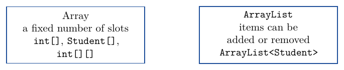
Arrays can hold primitive values directly. An ArrayList stores object references, so numbers need a wrapper such as Integer. An array's length stays fixed even if a variable later refers to a new, larger array. Copying is something the program must request explicitly.
The group report
The complete demo calls the row and column totals, then finds the busiest day. It starts with day 0 and uses a strict comparison, so the first largest day would win a tie. The four-by-seven dimensions are fixed in this example:
public class StudyGroupDemo
{
public static void main(String[] args)
{
StudyGroup group = new StudyGroup();
for(int row = 0; row < 4; row++) {
System.out.println(group.getMember(row).getName()
+ ": " + group.totalForStudent(row));
}
int bestDay = 0;
for(int day = 0; day < 7; day++) {
System.out.println("Day " + day + ": " + group.totalForDay(day));
if(group.totalForDay(day) > group.totalForDay(bestDay)) {
bestDay = day;
}
}
System.out.println("Busiest student: "
+ group.getMember(group.busiestStudent()).getName());
System.out.println("Busiest day: " + bestDay
+ " (" + group.totalForDay(bestDay) + ")");
}
}Ada: 345 Bo: 300 Chen: 240 Dev: 300 Day 0: 225 Day 1: 90 Day 2: 180 Day 3: 120 Day 4: 90 Day 5: 300 Day 6: 180 Busiest student: Ada Busiest day: 5 (300)
Another design
The parallel arrays connect a student and a week only by row position. Reordering members without moving the matching rows of minutes can attach a name to the wrong week, even though the code still compiles. Another design gives each Student a WeekLog field. One Student[] then holds the group, and moving a student keeps their week with them.
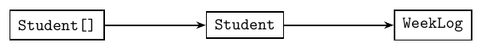
This is a proposed design, not a change to the running example. Lecture 14 starts Chapter 8: designing classes that are easy to change.
Practice
8.1 Choose an array or an ArrayList for each job, and give a reason.
- A reading for each of 100 fixed sensor positions.
- The names of visitors as they arrive and leave.
- Seven daily values for each of four students.
8.2 What is printed, and whose study value has been placed beside that name?
Student[] people = {new Student("Bo"), new Student("Ada")};
int[][] minutes = {{60}, {45}};
Student temp = people[0];
people[0] = people[1];
people[1] = temp;
System.out.println(people[0].getName() + ": " + minutes[0][0]);| Line | Printed |
|---|---|
| 1 |
9. Seats Part 2: The seat map
The problem
This part is practice for after class. Keep every field and method from Part 1, and add printSeatMap and bestRow to Theatre. SeatRow already has every method needed.
void printSeatMap()prints one line per row. Start withRow r:, using the row index for r, then print X for each booked seat and . for each free seat. Use no spaces between symbols.- The outer loop chooses a row; the inner loop uses that row's
getSize()andisBooked(seat). Useprintfor a symbol andprintln()after the row to end its line. int bestRow()returns the row with the most free seats. Keep the first row in a tie. Return -1 if there are no rows.
With at least one row, a full theatre still has a best row: all free counts tie at 0, so row 0 wins. The same applies when rows have zero seats. The method returns a row index and leaves the bookings unchanged. A map with no rows prints no lines.
Extend the existing demo after its last booked count: call printSeatMap(), then print Best row: followed by bestRow(). The complete output is:
Booked: 0 Book (0, 1): true Book (0, 1) again: false Book (3, 0): false Book (1, 4): true Book (2, 5): false Booked: 2 Row 0: .X... Row 1: ....X Row 2: ..... Best row: 2
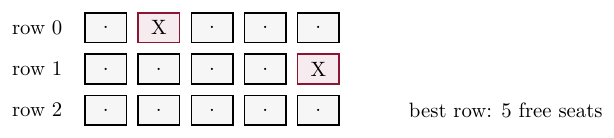
The free counts are 4, 4 and 5. There are 2 booked seats, and row 2 has the most free seats.
Practice
9.1 Write printSeatMap() and the extended TheatreDemo. Use additional paper or an IDE for the complete implementation.
Add printSeatMap to the Part 1 class. The checking program tries no rows, rows with no seats, an empty map, bookings in different rows and a second print.
Extend the demo in the second box. A finished Part 2 Theatre is available there.
9.2 Write bestRow(). It must also handle a theatre with no rows and keep the first row when counts tie. Use additional paper or an IDE for the complete implementation.
The checking program tries no rows, no seats, a tie, a partly booked theatre and a full theatre. It also checks a second call and the booked count.
10. Review
References and indexes
An array has a fixed number of slots, but a slot can hold a new value or reference. Copying and assignment have different effects on which container is shared. For a grid, check the row reference and use that row's own bounds. A reporting loop should change its counters and totals without changing the data it reports.
Practice
10.1 Correct each statement.
- "
new Student[2]creates two students." - "Copying a
Student[]withArrays.copyOfcreates new students." - "Every row of an
int[][]must have the same length."
10.2 Add int groupTotal() to StudyGroup. Use totalForStudent to return the total minutes for all students.
Add the method to the class. The checking program calls it twice.
10.3 Treat each println independently, starting from this grid. For each, state its value or the exception it throws.
int[][] cells = {{1, 2}, null, {3}};
System.out.println(cells[1][0]);
System.out.println(cells[0][2]);
System.out.println(cells[2][0]);| Expression | Value or exception |
|---|---|
cells[1][0] | |
cells[0][2] | |
cells[2][0] |
11. Complete Java Programs
Read and run these two complete programs after class, then write the extension asked for at the end of each. Use additional paper or an IDE for the complete implementation. Compare your demo's output with the expected output before changing a class.
In each box, complete one class. Finished copies of the other classes are available.
11.1 Program A: Car and ParkingLot
Carhas a privateString registrationfield. Its constructor takes the registration string. The methodgetRegistration()returns it.ParkingLot(int size)creates its privateCar[] spaces. Size must be non-negative. Null means that a space is free.boolean park(int space, Car car)refuses an invalid index, a null car, or an occupied space. Otherwise it stores the reference and returns true.boolean leave(int space)returns false for an invalid or empty space. Otherwise it clears that slot to null and returns true.countFree()counts null slots.printSpaces()prints each index followed by its registration orfree.- The demo makes four spaces, tries two cars in space 1, tries invalid space 4, parks in space 3, then clears space 1. It prints the returns, counts and final spaces in that order.
/** A car identified by its registration. */
public class Car
{
private String registration;
public Car(String registration)
{
this.registration = registration;
}
public String getRegistration()
{
return registration;
}
}/** Fixed parking spaces. A null slot is free. */
public class ParkingLot
{
private Car[] spaces;
/** Size must be non-negative. */
public ParkingLot(int size)
{
spaces = new Car[size];
}
/** Park a non-null car in a valid free space. */
public boolean park(int space, Car car)
{
if(space < 0 || space >= spaces.length
|| car == null) {
return false;
}
if(spaces[space] != null) {
return false;
}
spaces[space] = car;
return true;
}
/** Remove a car from a valid occupied space. */
public boolean leave(int space)
{
if(space < 0 || space >= spaces.length
|| spaces[space] == null) {
return false;
}
spaces[space] = null;
return true;
}
public int countFree()
{
int count = 0;
for(Car car : spaces) {
if(car == null) {
count++;
}
}
return count;
}
/** Print occupied and free spaces. */
public void printSpaces()
{
for(int space = 0; space < spaces.length;
space++) {
if(spaces[space] == null) {
System.out.println(space + ": free");
}
else {
System.out.println(space + ": "
+ spaces[space].getRegistration());
}
}
}
}public class ParkingLotDemo
{
public static void main(String[] args)
{
ParkingLot lot = new ParkingLot(4);
System.out.println("Free: "
+ lot.countFree());
System.out.println("Park 1: "
+ lot.park(1, new Car("ABC 123")));
System.out.println("Park 1 again: "
+ lot.park(1, new Car("DEF 456")));
System.out.println("Park 4: "
+ lot.park(4, new Car("GHI 789")));
System.out.println("Park 3: "
+ lot.park(3, new Car("JKL 012")));
System.out.println("Leave 1: " + lot.leave(1));
System.out.println("Free: "
+ lot.countFree());
lot.printSpaces();
}
}Expected output
Free: 4 Park 1: true Park 1 again: false Park 4: false Park 3: true Leave 1: true Free: 3 0: free 1: free 2: free 3: JKL 012
CarThe checking program reads the stored values from separate objects.
ParkingLotThe checking program tries a lot with no spaces, null cars, invalid indexes, an occupied space, leaving an empty space and leaving twice. It checks counts and prints every space.
ParkingLotDemoFinished copies of the other two classes are available. Match the expected demo output above.
11.1 Add int firstFree() to ParkingLot. Return the lowest free space index, or -1 when every space is occupied. Use additional paper or an IDE for the complete implementation.
The extension check tries no spaces, two free spaces, the last free space, a full lot and a space freed by leave.
11.2 Program B: Course and Gradebook
Course(String title, int assessmentCount)stores both values in private fields. Assessment count must be positive. Its getters aregetTitle()andgetAssessmentCount().Gradebook(Course course, int studentCount)stores the course reference and creates its privateint[][] marks: one row per student and one column per assessment. The course must be non-null, and student count must be positive.record(int student, int assessment, int mark)returns false for either invalid index or a mark outside 0 to 100. Otherwise it stores the mark and returns true.getCourseTitle()reads the course's title.studentAverage(int student)divides that row's sum by its length.assessmentAverage(int assessment)divides that column's sum by the number of rows. Both returndoubleand require valid indexes. The cast to double before division keeps the fractional part.- The demo records all 16 values in the four-by-four literal. It then tries student 4, prints the course title, and prints every row average and every column average.
An unrecorded mark starts at 0 and counts in an average. It does not mean "missing" to this class, so the demo records every mark before reporting. The positive sizes avoid division by zero. For example, 325 divided by 4 is 81 with integer division, but (double) 325 / 4 is 81.25.
/** A course with fixed assessments. */
public class Course
{
private String title;
private int assessmentCount;
/** Assessment count must be positive. */
public Course(String title,
int assessmentCount)
{
this.title = title;
this.assessmentCount = assessmentCount;
}
public String getTitle()
{
return title;
}
public int getAssessmentCount()
{
return assessmentCount;
}
}/** Rows are students; columns are assessments. */
public class Gradebook
{
private Course course;
private int[][] marks;
/** Positive count; non-null course. */
public Gradebook(Course course,
int studentCount)
{
this.course = course;
int assessments =
course.getAssessmentCount();
marks = new int[studentCount][assessments];
}
public String getCourseTitle()
{
return course.getTitle();
}
/** Refuse invalid indexes or marks. */
public boolean record(int student,
int assessment,
int mark)
{
if(student < 0 || student >= marks.length) {
return false;
}
if(assessment < 0
|| assessment >= marks[student].length
|| mark < 0 || mark > 100) {
return false;
}
marks[student][assessment] = mark;
return true;
}
/** Average for a valid student. */
public double studentAverage(int student)
{
int sum = 0;
for(int mark : marks[student]) {
sum += mark;
}
return (double) sum
/ marks[student].length;
}
/** Average for a valid assessment. */
public double assessmentAverage(
int assessment)
{
int sum = 0;
for(int row = 0; row < marks.length; row++) {
sum += marks[row][assessment];
}
return (double) sum / marks.length;
}
}public class GradebookDemo
{
public static void main(String[] args)
{
Course course = new Course("COMP 2001", 4);
Gradebook book = new Gradebook(course, 4);
int[][] results = {
{70, 80, 90, 85}, {60, 75, 81, 72},
{90, 85, 95, 94}, {80, 76, 94, 82}
};
// Record all marks before averaging.
for(int row = 0; row < results.length;
row++) {
for(int col = 0;
col < results[row].length; col++) {
book.record(row, col,
results[row][col]);
}
}
System.out.println("Bad student stored: "
+ book.record(4, 0, 50));
System.out.println("Course: "
+ book.getCourseTitle());
for(int row = 0; row < results.length;
row++) {
System.out.println("Student " + row + ": "
+ book.studentAverage(row));
}
for(int col = 0;
col < course.getAssessmentCount();
col++) {
System.out.println("Assessment "
+ col + ": "
+ book.assessmentAverage(col));
}
}
}Expected output
Bad student stored: false Course: COMP 2001 Student 0: 81.25 Student 1: 72.0 Student 2: 91.0 Student 3: 83.0 Assessment 0: 75.0 Assessment 1: 79.0 Assessment 2: 90.0 Assessment 3: 83.25
CourseThe checking program reads the stored values from separate objects.
GradebookThe checking program tries initial zeros, both invalid indexes, marks below 0 and above 100, the values 0 and 100, decimal averages, a replaced mark and a one-cell grid.
GradebookDemoFinished copies of the other two classes are available. Match the expected demo output above.
11.2 Add double overallAverage() to Gradebook. Count every mark once, then divide the total by the number of cells. Keep the fractional part. Use additional paper or an IDE for the complete implementation.
The extension check tries initial zeros, a filled grid with a decimal average and a second call.
Lecture summary
StudyGroup keeps four students in a Student[] and their study minutes in an int[][]. Each student has one row of seven daily values. The same row index connects a student's name to that student's week.
Object arrays
- An object array holds references to objects.
new Student[4]creates one array with four slots. It creates no students. Every slot starts atnull. - Create a student for each slot before calling a method through it. A null slot has no object to call a method on. The slot can be read or compared to null, but
members[0].getName()throwsNullPointerExceptionif that slot is null. - A for-each loop copies each reference into its loop variable. It can call methods on the referenced object. When null means an empty place, test the reference before calling a method. Use an indexed loop when the position is needed again.
Copying
- Assignment copies an array reference. After
copy = original, both variables refer to one array. A loop that copies primitive values into a new array gives two separate arrays. Arrays.copyOf(a, n)returns a new array of lengthn. It copies what fits, drops values beyond the new length, and fills extra slots with defaults: 0 forint[]and null for reference arrays. The old array's length stays fixed.- A shallow copy creates a new array and copies its references. The students are shared. Changing a shared student's name is visible through both arrays. Replacing one copied slot leaves the original slot alone.
- For arrays,
==tests whether two references refer to the same array.Arrays.equalscompares one-dimensional elements in order. For object arrays it uses the elements'equalsmethods and handles null slots.
Grids
- A grid has rows and columns. A two-dimensional Java array is an array of row references.
new int[4][7]creates an outer array and four separate seven-element rows. Every int starts at 0. - The first index chooses a row; the second chooses a cell in that row.
minutes[2][6]is Chen's 90 minutes for day 6. Assigningint[] week = minutes[0];shares that row. new int[4][]creates only the outer array. Its row slots start null. Create each row before reading its length or using a cell. Even with a valid row index, a null row has no cells to use.
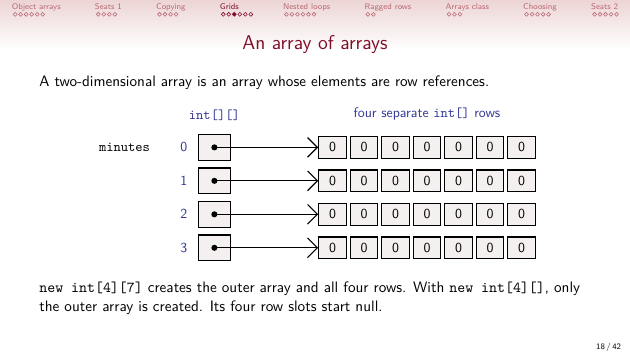
Totals and nested loops
- A row total keeps the row fixed and visits every column. A column total keeps the column fixed and visits every row. Each call starts a fresh sum. The student totals are 345, 300, 240 and 300; all students together recorded 1185 minutes.
- A nested loop is a loop inside another loop. After the outer loop chooses a row, the inner loop visits its cells, starting at column 0. Use
grid.lengthfor the row count andgrid[row].lengthfor that row's cell count. - The best-so-far index identifies the largest total. Start at a valid row, then compare the other rows. A strict
>keeps the first row in a tie. Ada is the busiest student; day 5 has the largest column total, 300.
Ragged rows and bounds
- A ragged array has rows of different lengths. Use the current row's length in the inner loop. An empty row has length 0 and contributes no values. A null row has no array.
- Both indexes need valid bounds. An invalid index throws
ArrayIndexOutOfBoundsException. Access through a null row throwsNullPointerException. These expressions can compile and still fail when evaluated.
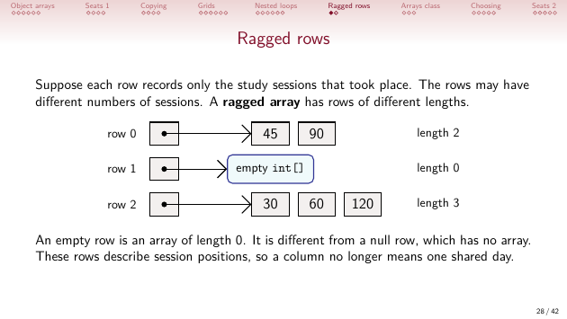
The Arrays class
- Import
java.util.Arraysand call its static methods through the class name.toStringformats one-dimensional contents;deepToStringalso includes nested rows. Printing an array directly does not list its contents. sortchanges an int array into increasing order.fillchanges every element to the supplied value. For reference arrays, fill stores the same reference in every slot. It creates no separate objects for those slots.deepEqualscompares contents inside nested rows.equalson separately created row arrays can be false even when those rows contain the same values. Printing and comparison leave the arrays unchanged.
Choosing a collection
- Use an array for a fixed set of positions. Use an
ArrayListwhen items join and leave. Arrays can hold primitive values directly; an ArrayList stores object references, so numbers need wrappers such asInteger. - Parallel arrays use the same index for related data. Moving students without their matching rows attaches names to the wrong weeks. Giving each Student a WeekLog field would keep the week with its student when the group is reordered.
Theatre seats
Theatreholds aSeatRow[]. The constructor creates every row separately. Itsbookmethod checks the row, then lets SeatRow check the seat. Repeated or invalid bookings return false.printSeatMapuses nested loops: X means booked and . means free.bestRowreturns the first row with the most free seats, or -1 for no rows. When there is at least one row and every row is full, their free counts tie at 0, so row 0 wins.
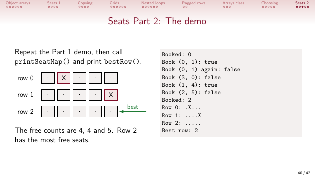